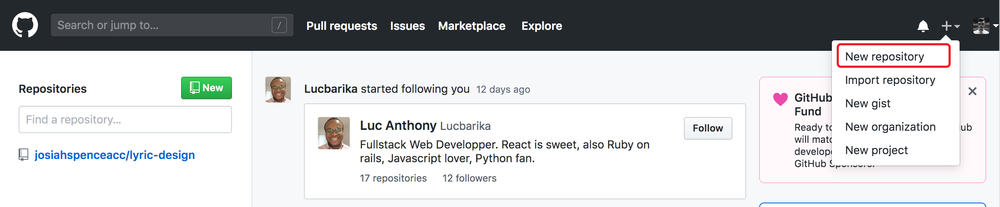
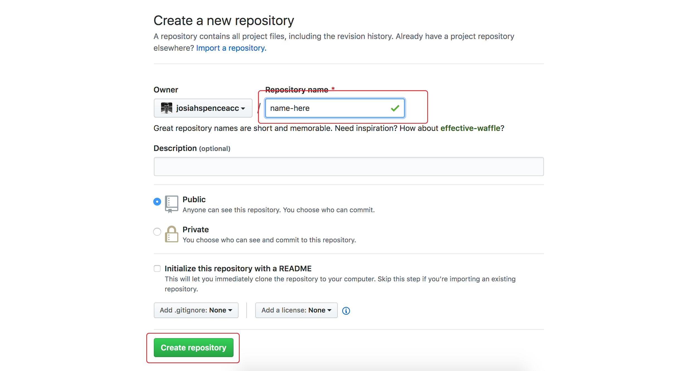
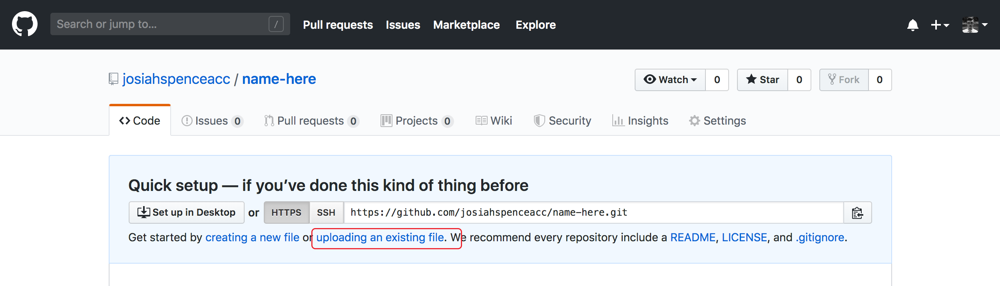
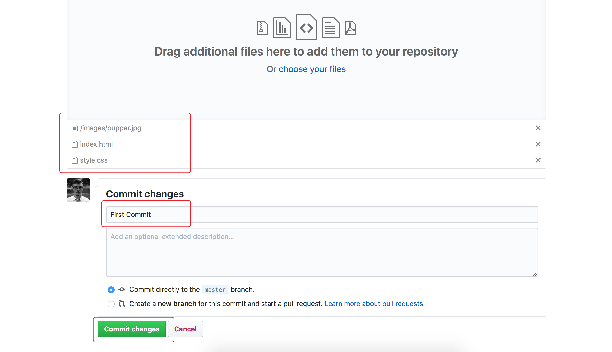
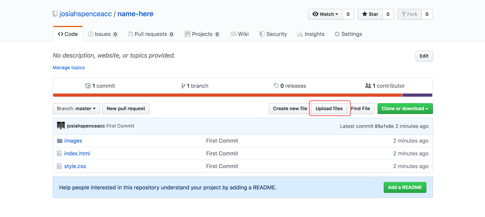
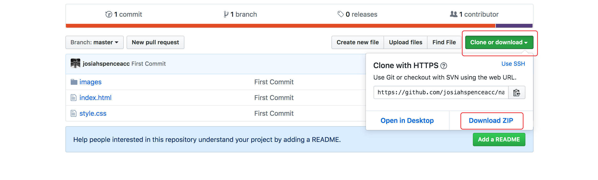

Git / Github
When working with code, it's easy to loose track of the different changes you have made and the different iterations the project has undergone. One solution to this problem is to use version control—a system that remembers all the previous versions of the code and where it has changed. This makes it easy to ensure you are always working on the most current version, and to remain confident that you can always roll back your changes if something goes wrong.
Git is the most popular version control protocol in use today, and Github is a webapp that enables easy and free storage and management of projects in git.
Repositories
A repository is what we call a single project in git version control. For our purposes, you should probably set up a repository for each website you create. The repository holds all the code files, folders, and other files such as media that make up the site. When you make a repository on Github, it serves as a safe, online copy of your code.
Commits
When you have made some changes to your project that you think you are ready to keep, you make a commit to the git repository. As the name implies, this can be thought of as "making it official" with regard to your changes. Another way to think of a commit is that it is like pressing save in a word processor. The changes are recorded and will be present when you return to the repository in the future. If you make changes but don't commit them, they are not yet saved in the repository.
Think of making a commit as similar to pressing save in a word processor.
A common work flow is to keep a working copy of your project on your local computer, and then to commit satisfactory changes to a git repository online, like Github. That way, you can play around and test code-in-progress safe in the knowledge that the repository is safe from any accidents.
When making a commit, you must add a commit message with a brief description of what changes you have made. This makes it easy to look through your version history and understand what happened at which point.
Workflow
There are many ways to work with git and many more features and possibilities than mentioned here, but for the purposes of this course, here is a suggested workflow:
-
When you begin a new project, create a repository on the Github website.
In the main navigation, click "New Repository" under the toggle menu. Name the repository and click "Create Repository".  -
Create an initial commit of your files by visiting the "uploading an existing file" link on the repository page. Drag and drop all your files and subfolders and add a commit message.
Add your files to the repository by clicking the "Uploading an existing file" link. Upload all your files and sub-folders, write a commit message, and click the "Commit Changes" button.  -
Every time you complete a new phase or new section of the site, create a new commit in Github by visiting the "Upload Files" button on the repository page. Be sure you drag and drop in all your files. Write a commit message that explains the changes you have made. For instance, you might say "Added project cards" or "changed type colors". That way, when you look back through your commits, you know exactly what each one includes.
To make a new commit, click the "Upload files" button to upload your changes.  -
Next time you are ready to work on the site. Delete any local versions of the site on your computer and download a fresh copy from Github using the "Clone or Download" button on the repository page. This ensures that you are always working on the newest, up-to-date version of the code.
To download a copy for new work, click "Clone or download", then "Download ZIP".  -
Repeat the commit and fresh download process every time you do work on the site.